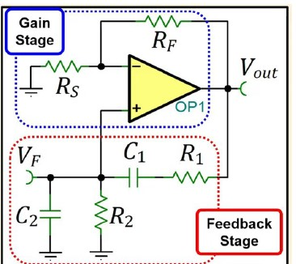
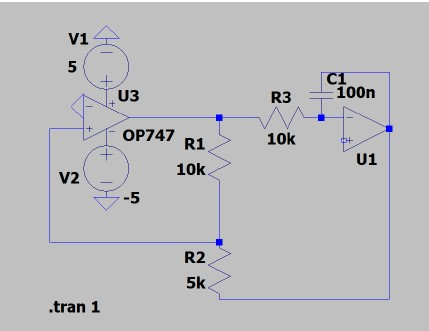
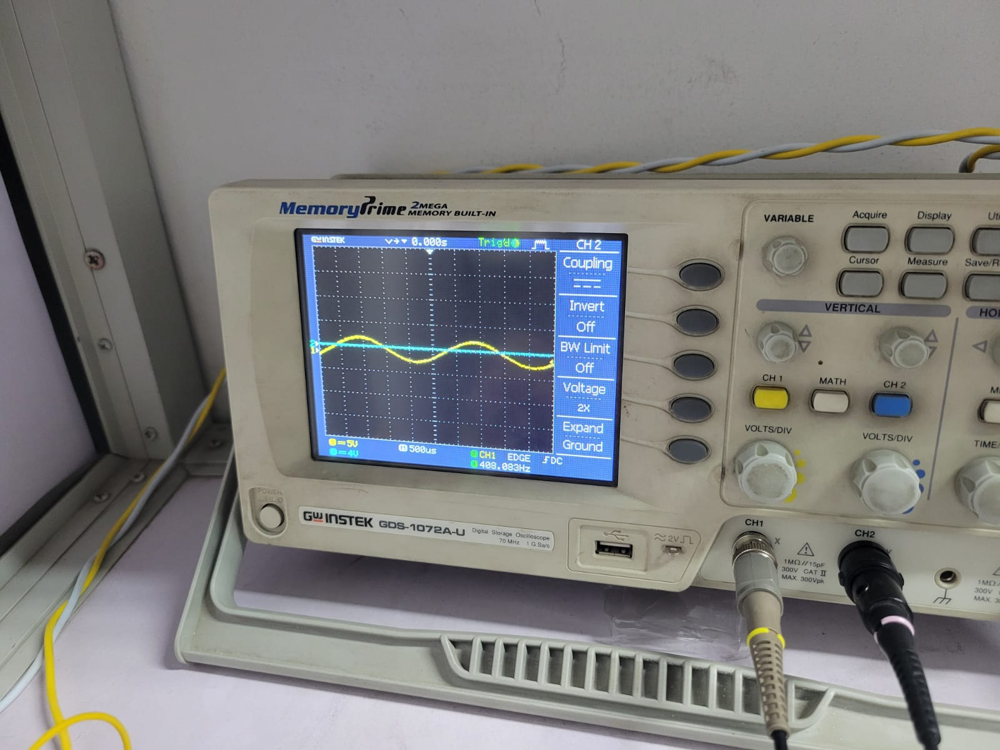
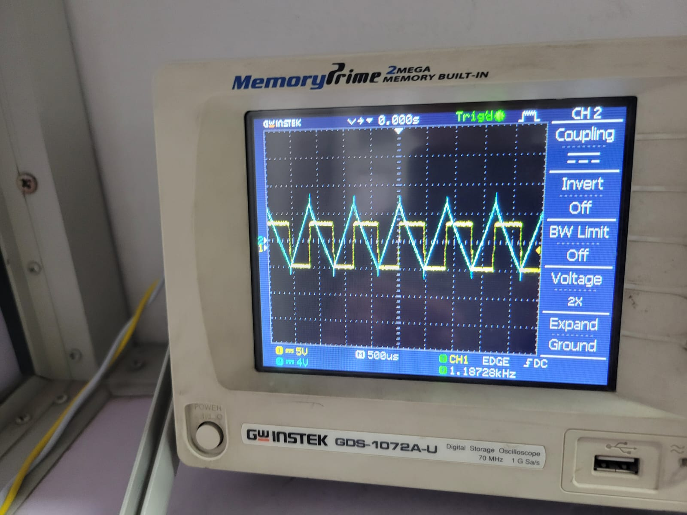

Overview
In this project I Created a function generator and wein bridge to be able to generate a square wave, a triangle wave and a sine wave.
Wein bridge circuit
The circuit of the wein bridge involves a gain stage and a filtering stage. the circuit works by amplyfying wate whetevr intial circui, then through the feedback loop, filtering only one frequency. The core working principle of this circuit is for a signal to be amplified, it must have exactly the phase and gain necessary, and every other signal gets attenuated as it gets iterated in the feedback loop, resulting in only 1 sine frequency.
The value of using a wein bridge is their incredibly stable frequncies, and theyre suitable for audio frequincies (Khz)

Function generator circuit
As for the function generator, the circuit works by using a comparter oscillator, and simply integrating the output to create a triangle wave.

Results


Demo Video
Watch the project in action on YouTube.
Reflection
The main challenge I faced was in tuning the sine generated, as the gain has to be exact else the shape will be clamped, or it will decay to 0. Returning to this project, I would like to add frequency and magnitude changing, and make ait into a permanent pcb to use for other works.